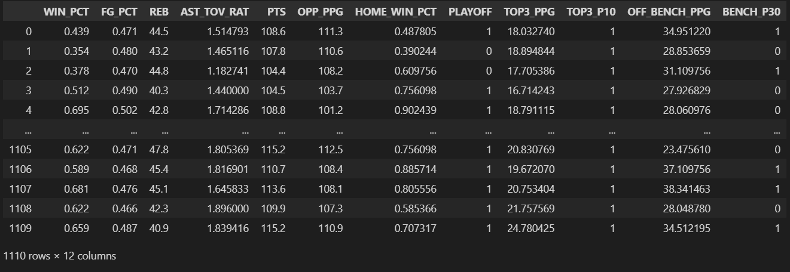
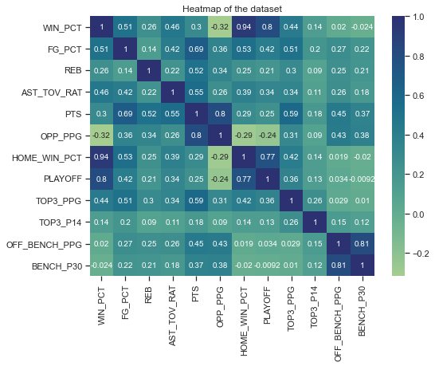
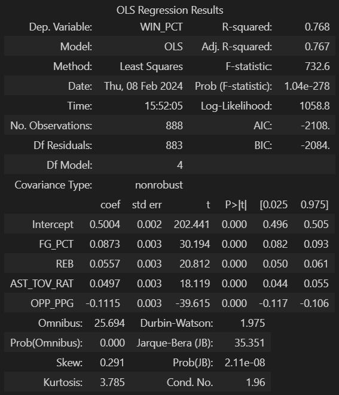
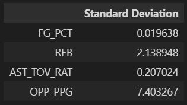
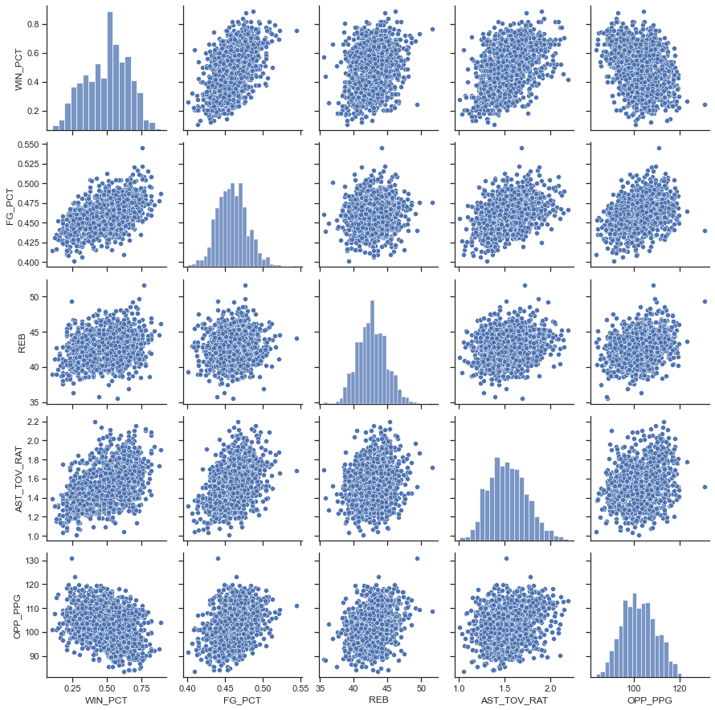
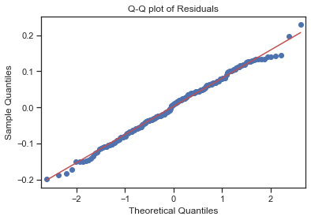
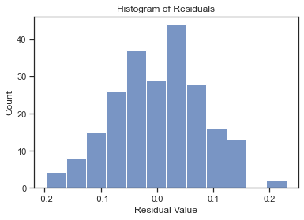
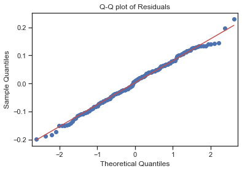
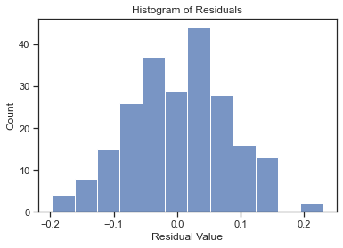

menu
This project analyzes the influence of various NBA statistics on regular-season success. Utilizing the insights gleaned from a dialogue with the large language model, Gemini, a multivariate linear regression model was constructed using data retrieved from the NBA's public statistics API via Python. Feature engineering techniques were employed to preprocess and refine the acquired data. The model aims to predict a team's winning percentage based on the identified key statistical parameters. By interpreting the model's results and conducting an evaluation, the project intends to assess the effectiveness of the parameters suggested by Gemini in determining a team's regular season performance.
The full code for this project is available on GitHub.
As a source for this project, I used data acquired from the NBA API Python package available at https://github.com/swar/nba_api, which provides several endpoints for NBA statistics of various sorts. The stats suggested by Gemini as good predictors of a successful regular season are summarized below.
Offensive Efficiency
Defensive Prowess
Balance and Depth
Intangibles
Some of these stats were readily available, although distributed in different datasets: points per game, field goal percentage, rebounds per game, and points allowed. All the others required some degree of transformation.
Datasets from four endpoints were used:
LeagueStandings: The LeagueStandings dataset has stats for all teams for a given season. I pulled data for all years since 1982 and saved itnto a dataframe.
TeamYearByYear: The LeagueStandings dataset has stats for all teams for a given season. I pulled data for all years since 1982 and saved itnto a dataframe.
CommonTeamRoster: The LeagueStandings dataset has stats for all teams for a given season. I pulled data for all years since 1982 and saved itnto a dataframe.
PlayerCareerStats: The LeagueStandings dataset has stats for all teams for a given season. I pulled data for all years since 1982 and saved itnto a dataframe.
Some of the features I was interested in tracking were not readily available in the datasets but could be derived from existing variables.
Assistance/Turnover Ratio: I transformed the 'Assistance per Game' and the 'Turnover per Game' into the 'Assistance-Turnover Ratio' variable by dividing the first by the latter.
# Transform the 'Assitance per Game', and the 'Turnover per Game' into the 'Assistance-Turnover Ratio' variable
by_team['AST_TOV_RAT'] = by_team['AST']/by_team['TOV']
by_team = by_team.drop(['AST', 'TOV'], axis=1)
Home Court Advantage: The home court results were originally formatted as a string with numbers representing 'win-loss'; '24-18', for example. It was converted to a winning percentage by dividing the wins by the sum of wins and losses.
# Splits the column into two using the '-' separator.
league_standings[['HOME_W', 'HOME_L']] = league_standings['HOME'].str.split('-', expand=True)
# Converts to integer
league_standings['HOME_W'] = league_standings['HOME_W'].astype(int)
league_standings['HOME_L'] = league_standings['HOME_L'].astype(int)
# Creates a calculated column for the win/loss percentage and drop old columns
league_standings['HOME_WIN_PCT'] = league_standings['HOME_W']/(league_standings['HOME_W']+league_standings['HOME_L'])
league_standings = league_standings.drop(['HOME', 'HOME_W', 'HOME_L'], axis=1)
Scoring distribution (top 3 players score at least 10 points per game): For this feature, I created a dataframe with only the top 3 scorers for each team and season using their average points per game. Next, I created a dataframe with only the lowest scorer of each group to check whether he scored at least 10 points and created a Boolean to represent it. Finally, I created an additional column with the average points per game for the top 3 players for each team and year.
# Group by Team and Year, order by greatest points per game average, and keep only the top 3 in each group
rosters_players_top3 = rosters_players_selected.sort_values('PTS', ascending=False).groupby(["TEAM_ID", "SEASON_ID"]).head(3)
rosters_players_top3 = rosters_players_top3.sort_values(['TEAM_ID','SEASON_ID']).reset_index(drop=True)
# Extracted only the lowest scorer out of the top 3
rosters_players_top3_min = rosters_players_top3[['TEAM_ID', 'SEASON_ID', 'PPG']].groupby(by=['TEAM_ID', 'SEASON_ID']).min().reset_index()
# Created boolean to represent teams and years where all the top 3 scorers averaged at least 10 points
rosters_players_top3_min['TOP3_P14'] = np.where(rosters_players_top3_min['PPG']>=10, 1, 0)
rosters_players_top3_min = rosters_players_top3_min.rename(columns={'SEASON_ID':'YEAR'})
rosters_players_top3_min = rosters_players_top3_min.drop(['PPG'], axis=1)
Bench production: To extract the bench players from the players and rosters dataset, I first identified the top 5 players who played the most minutes and created a new dataframe. I assumed all other players to be 'bench' players. Next, I subtracted the original dataframe from the starters’ dataframe to create a table with only the bench players.
Next, I grouped the table with bench players by team and year and added the total points of all bench players for each team and year. Since there are 82 games per season, I divided the total points by 82 to get the average points per game by bench players. Finally, I created a Boolean to represent whether a team averages at least 30 points per game "off the bench."
# Extracts the top 5 players with most minutes played
rosters_players_starters = rosters_players_selected.sort_values('MIN', ascending=False).groupby(["TEAM_ID", "SEASON_ID"]).head(5)
rosters_players_starters = rosters_players_starters.sort_values(['TEAM_ID','SEASON_ID'])
#extracted the indexes to subtract the starters dataframe from the original dataframe
starters_idx = list(rosters_players_starters.index.values)
off_the_bench = rosters_players_selected.drop(index=starters_idx)
# Sums the total points for all players and divide by 82
off_the_bench_sum = off_the_bench[['TEAM_ID', 'SEASON_ID', 'PTS']].groupby(by=['TEAM_ID', 'SEASON_ID']).sum().reset_index()
off_the_bench_sum['OFF_BENCH_PPG'] = off_the_bench_sum['PTS']/82
# Creates a boolean for wheter a team averages at least 30 points off the bench for a given year
off_the_bench_sum['BENCH_P30'] = np.where(off_the_bench_sum['OFF_BENCH_PPG']>=30, 1, 0)
off_the_bench_sum = off_the_bench_sum.rename(columns={'SEASON_ID':'YEAR'})
off_the_bench_sum = off_the_bench_sum.drop('PTS', axis=1)
In order to test the relevance of the selected features over the win percentage in NBA's regular season, I built and evaluated a multivariate linear regression model. I started by loading a CSV file with all the features extracted from the raw datasets and dropping unnecessary variables, leaving only the features potentially relevant to the model.

Field Definitions
WIN_PCT: Wining percentage FG_PCT: Field Goal Percentage REB: Number of Rebounds per Game AST_TOV_RAT: Assistance/Turnover Ratio PTS: Average Points Per Game OPP_PPG: Average Opponent Points Per Game HOME_WIN_PCT: Percentage of Home Games Won PLAYOFF: Whether a Tean Classified to Playoffs a Given Year TOP3_PPG: Average Points Per Game by the Top 3 Scorers TOP3_P10: Whether the Top 3 Scorers All Averaged at Least 10 Points OFF_BENCH_PPG: Average Points Per Game Off-The-Bench BENCH_P30: Whether a Team Averaged 30 plus Points Off-The-Bench per Game
Correlation Matrix
Next is a Pearson Correlation matrix that shows how correlated variables are with each other. The most relevant row is the first, where we can assess the correlation between the variable I'm trying to predict and all the others. It's noticeable that TOP3_P10, OFF_BENCH_PPG, and BENCH_P30 are not linearly correlated to the win percentage, so I'm not using these.
The PPG and OPP_PPG variables are highly correlated among themselves, violating the multicollinearity assumption for regression models, so only OPP_PPG will be used. FG_PCT is also highly correlated to TOP3_PPG, so only FG_PCT will be used.
In addition to that, HOME_WIN_PCT, the most correlated variable, is not interesting as a predictor for winning percentage since it accounts for half of the games represented by it. The PLAYOFF variable is also not relevant for the sake of this model.

Finally, out of the original features, the selected ones to be used in the model are: FG_PCT, REB, AST_TOV_RAT, and OPP_PPG. I separated the data set into training and testing sets using a test_size of 0.2, and StatsModels' Ordinary Least Squares model, ols(), was used to create the multivariate linear regression model. Since the variable the model is trying to predict and some of the predictors are on a vastly different scale, I'm rescaling the variables using StandarScaler. After scalling, all predictors have a mean of zero and a standard deviation of one after scaling.

The resulting model has an adjusted R-Squared value of 0.767, which means the predictor variables account for 76.7% of the variation in the predicted variable. It's interesting to note that the Intercept has a coefficient of .5, which means that if all the predictors are zero (which in this case represents the mean) a team would win half of the games.
Since the data was scaled to have a mean of zero and a standard deviation of one, the coefficients will be referring to one standard deviation unit in the predictor. The standard deviation for each variable is in the table below.

The coefficients can thus be interpreted as follows:
Next I checked for the following regression model assumptions to validate the model.
Linear Relationship, Multivariate Normality, and No Multicollinearity
The chart below shows a scatterplot between each pair of variables and a histogram for each variable. From this chart, we can confirm the first three linear regression model assumptions: 1) The predictor variables are linearly correlated to the predicted variable and have weak to moderate correlation. 2) The predictor variables are not correlated to each other. 3) Each of the predictor variables follows a normal distribution.

Homoscedasticity, Normal Distribution of Residuals
The following charts account for the other model assumptions: 1) Homoscedasticity: the residuals are randomly distributed. 2) The residuals follow a normal distribution.
 



After considering all the parameters suggested by Gemini as determinant factors for an NBA team's success in the regular season, it was clear that some of them were indeed very relevant. In contrast, others didn't seem to have a significant effect. The top three players scoring two digits and Bench Production showed little correlation with the win percentage. Field Goal Percentage showed the highest correlation among the Assistance/Turnover ratio. Rebounds and Opponent Points per game had a mild correlation with the win percentage. Combined, the Field Goal Percentage, Rebounds, Assistance/Turnover Ratio, and Opponent Points Per Game were able to explain 76% of the variation in the Win Percentage when used as predictors in a Multivariate Linear Regression model. It is also interesting to note that, according to the model, when all the four predictors have the mean value for that parameter the predicted win percentage is 50%.
©Marcel Castro-Lima